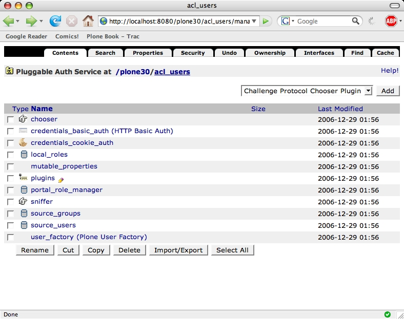
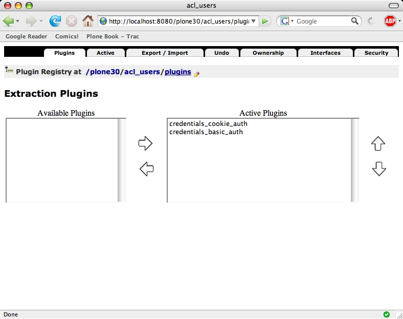

Configuring PAS¶
Description
There is no Plone interface to configure PAS: you will need to use the Zope Management Interface (ZMI). In the ZMI you will see a acl_users folder in the site root. This is your PAS.
If you open the acl_users folder you will see a number of different items. Each item is a PAS plugin, which implements some PAS functionality.
There is one special item: the plugins objects manages all administrative bookkeeping within PAS. It remembers which interfaces are active for each plugin and in what order the plugins should be called.
Let's take a look to see how this works. If you open the plugins object you will see a list of all the PAS interfaces, along with a short description of what they do.
We will take a look at the extraction plugins. These plugins take care of extracting the credentials such as your username and password from a request. These credentials can then be used to authenticate the user. If you click on the Extraction Plugins header you will see a screen which shows the plugins which implement this interface and allows you to configure which plugins will be used and in what order.
In the default Plone configuration there are two plugins enabled for this interface:
- the credentials_cookie_auth plugin can extract the login name and password from an HTTP cookie and HTTP form values from the login form or portlet
- the credentials_basic_auth plugin can extract the login name and password from standard HTTP authentication headers.
In the default configuration the cookie plugin takes preference over the basic authentication plugin. This means that credentials from a HTTP cookie will be preferred over credentials form HTTP authentication headers if both are present You can try this by first logging in using standard HTTP authentication in the Zope root and then visiting your Plone site and logging in with a different user there: you will see that the new user is now the active user.
You can change the order of the plugins by clicking on a plugin and moving it up or down with the arrows. Using the left and right arrows you can enable and disable a plugin for this interface.